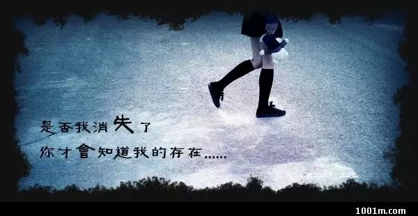
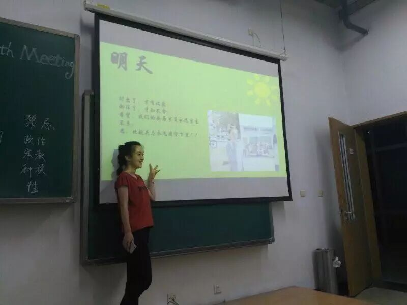
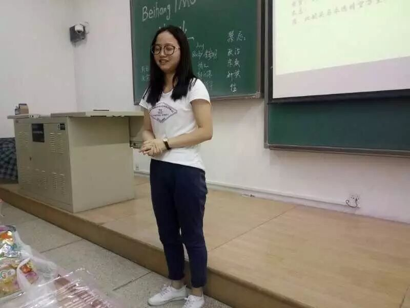
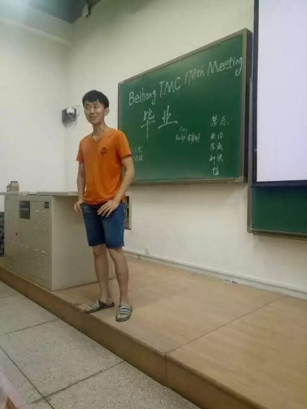
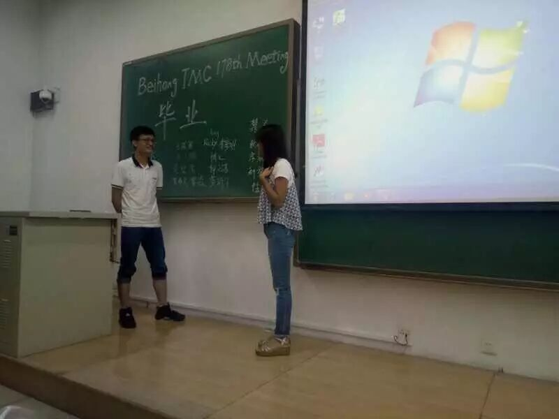
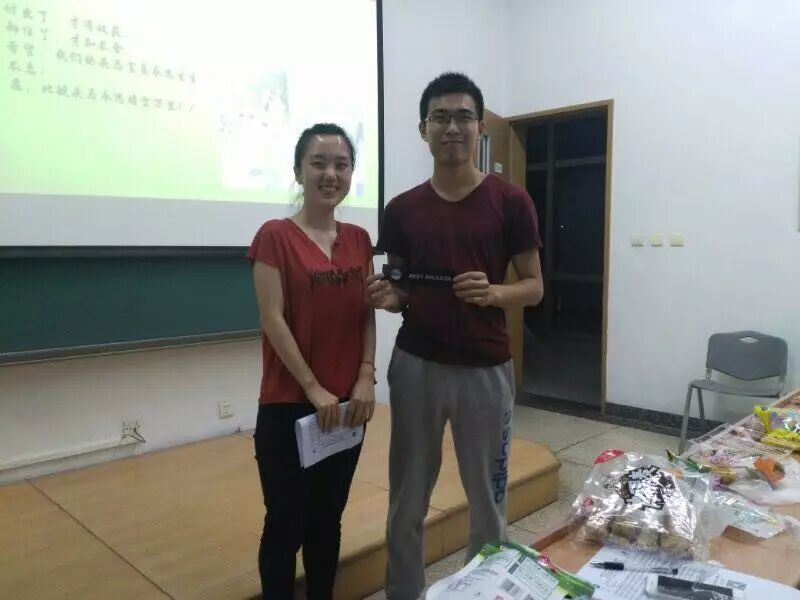
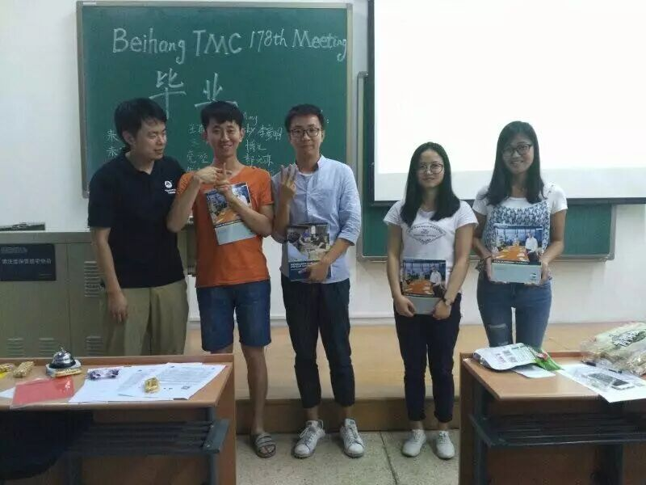
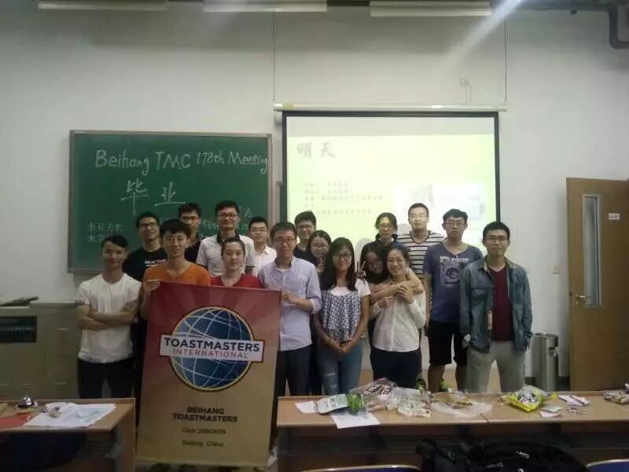

一年一度的毕业季又到了，曾经那些含着泪和母校说再见的学子们，从青涩的高中时代，走向了大学的殿堂，步入一个新的征程。四年的大学时光已如白驹过隙，转瞬即逝。作为学子，我们已从一个渴求知识的新生，成长为一名略有成就的毕业生。
有人说，丰富多彩的大学校园就像是一个熔炉，煅烧出每个人与众不同的精彩人生。我们经历了大一的纯真时代，走过了大二的轻舞飞扬，告别了大三的紧张和忙碌，来到了今天大四的依依别离。
毕业，想必大家都不会陌生。因为从小学到中学，从中学到大学，再从研究生到博士生，毕业像是天空中的摩天轮，让我们告别之前的朋友和同学，然后遇到新的一群人，说不上是否是华丽的转身，离别时的心酸和痛苦，其中的故事只有我们自己知道。

叶子的离开是风的追求，还是树的不挽留？离开就是离开，分手就是分手，对错...没有意义，不再合适的两个人，与其耗尽对方的养分，一同枯萎，不如坦然聚散，各自相安。离开树后，叶子又会如何呢？可能会被有心人捡到，用心珍藏；也可能随风而去，不知所踪，说不定落在地上，生根发芽，脱胎换骨，以新的姿态生活下去。一切的一切都要看缘分。叶子走后会想树吗？可能吧，但是回不去了。
如果有时光机，我们都想回到过去，去找寻心目中曾经的遗憾；但是但我们去找寻的过程中，最后的最后却忽略了身边的人，那些陪伴着你找寻的一群人，他们才是你生命中最重要的，而过去的就过去了，珍惜当下才是最重要的。你是否曾经有过类似的经历，大学的室友和同班同学，会不会因为一次争吵而遗憾当初不应该发脾气，会不会因为彼此一次互动合作，而在心中默默感谢有TA 们的陪伴，今晚，我们毕业了！大家来分享一下自己的大学故事吧。
1）大学毕业季，你有什么后悔做了或者没做的事情吗？为什么？

Amy(孔祥飞)作为北航即将卸任的主席，本科是南航，目前是北航研二的她后悔在学校的时候没有早点去接触社会，可能是马上要毕业了吧？大胆往前走吧，曾经的你那么棒，以后会更棒的！
2）你觉得大学四年不去做什么是会让人感到遗憾的？

Kiki(王琪琪)曾经加入了一个社团，社团打着环保的名义，却没有做环保有关的事情，这让她很郁闷。大学有什么事她没用做过的吗？其实大学你想做什么就做什么，时间就像一张网，你把它撒在哪里，哪里就会有你想要的收获。
3）你在大学里面做过最疯狂的一件事是什么？
龚新宇同学想起了自己曾经考研失败后，放弃了调剂，而是和自己下了一盘为期两年的棋，一边工作一边复习考研，现在的他已经实现了自己的梦想，成功考取了北航的研究生。为梦想拼搏才是人生中最疯狂的一件事，这就是他的答案吧。
4）毕业之后打算就业还是考研？
Nike(郭元东)作为博一的学生，想起了当初选择继续考研的经历，是因为当时的就业形势不好，不是自己想要的，读研之后开始做项目之后，发现了自己有更高的追求，所以选择了读博。一切都一切都是那么的自然发生，平平淡淡才是真啊。
5）你会实现曾经的梦想吗？想象一下十年以后你的样子？
Bowen(博文)虽然已经毕业了，但依然是一个梦想实践者，他结合了自己十年前自己的梦想，现在的自己没有让自己失望，未来的十年也不会让自己失望，爱拼才会赢，加油。
6）大学室友对你是怎样的存在，TA们最让你难忘的事情是什么？

Rocky(李彦明)是北科的高材生，有经济和医学的双学位，他曾经因为自己的高调张扬的性格和大学的室友发生了一些矛盾，慢慢懂得了要尊重室友的重要性。尊重不仅仅是尊重一个人的品行和人格，同时也要尊重一个人的家庭出身和个人习惯。
7）如果你们是一对恋人，毕业之后，一个打算考研，一个打算工作，而且长期要分开，你们现在要谈论如何处理这个问题，会不会选择分手？

Mike(雷森)和Carrie(朱春灵)表演的太好了！难道生活真是一场戏，一切都要靠演技？Carrie打算北航的研究生，而Mike打算回上海工作，因为自己想离家近一点，好照顾自己的母亲。Carrie想起了他还有一个弟弟，劝他跟自己去北京。Mike权衡了利弊之后，决定跟她去北京，皆大欢喜。
--------------------------------------------------------------
『无所谓』
Bowen(博文)CC10
-----------------------------------

我们有时候把自己最好的一面留给了陌生人，而对待自己最亲近的人恶言冷语。情侣之间最严重的争吵是无论你发多大的火，对方都"无所谓"，因为不爱了，因为彼此之间无法相互理解了。生活中的"无所谓"有很多的含义，面对失败,"无所谓"是对自己的勉励;面对成功,"无所谓"是淡泊；面对别人的嘲笑和讽刺，"无所谓"是自尊，与世无争的态度。
博文的CC10非常富含逻辑性，论据丰富多彩，小到生活的小事，大到人生的处世态度，富含哲理，引人入胜。
希望今后的你可以"小心"的对待"无所谓"，不要让身边的最亲密的人寒心了，因为不论是亲情、友情还是爱情，人的心一旦"寒了",不论你说多温暖的话，做多么感人的事，一切都太晚了。

当然。今晚也是我们北航头吗俱乐部官员换届的日子，由北航俱乐部的Founder孙剑文（Keven）主持了官员换届，孔祥飞(Amy)用昨天、今天和明天做了主席报告，同时也对下一届官员送上了暖暖的诚挚祝福，北航头马俱乐部一定会越办越好。
最后，送上一张大家的合照。
